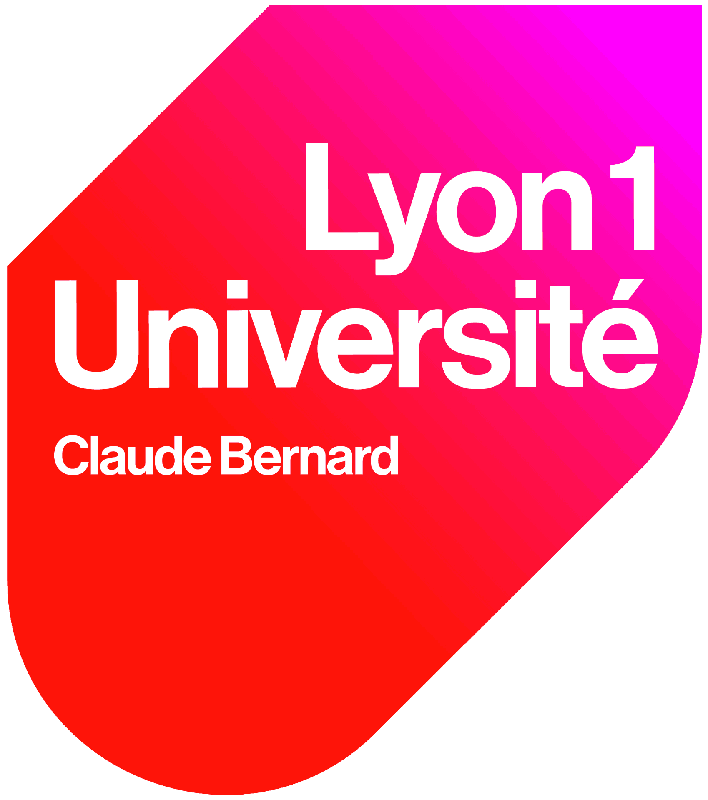
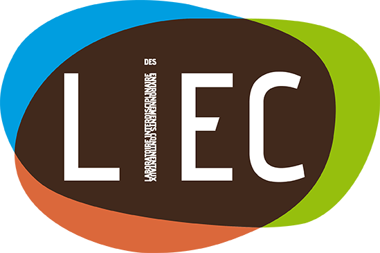
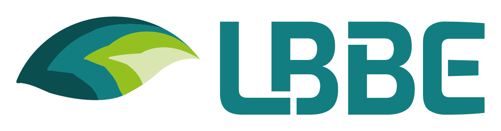
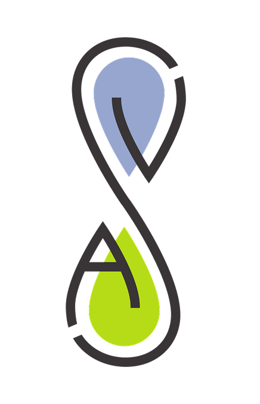

Curriculum Vitae
Education
PhD — Bioinformatics & Ecotoxicology 2023 — Present
Université de Lorraine
- Title: “Analytical tool and toxicological interpretation keys for time- and dose-dependent transcriptomic responses: design based on the effect of di-butyl phthalate on Daphnia magna and Danio rerio”
- Supervisors: Prof. Marie Laure Delignette-Muller and Assoc. Prof. Elise Billoir
- Advisor: Assoc. Prof. Sophie Prud’homme
Master — Biodiversity, Ecology, and Evolution 2021 — 2023 
Université de Lyon 1
- Topics: Biodiversity and functioning of ecosystems | Bioinformatics and Modelling in Ecology | Bayesian Statistics | Genomics in Ecology and Evolution | Parasitical and Mutualistic Interactions
Bachelor — Life sciences 2018 — 2021
Université de Lyon 1
- Topics: Community and Microbial Ecology | Ecophysiology | Genetics and Population Dynamics | Molecular tools for Ecology and Evolution
Research Experience
Doctoral Researcher
2023 — Present
Labs —   
Institutions — Université de Lorraine & VetAgroSup
Project — ANR Chroco
Title: “Analytical tool and toxicological interpretation keys for time- and dose-dependent transcriptomic responses: design based on the effect of di-butyl phthalate on Daphnia magna and Danio rerio”
This thesis sits at the interface of ecotoxicology and bioinformatics – broadly ecotoxicogenomics — developing methodological approaches for the analysis and interpretation of transcriptomic data modulated by two key variables: contaminant dose and exposure time. Work spans both a model organism (Danio rerio) and a non-model organism (Daphnia magna), the latter presenting specific challenges in genome annotation completeness and biological database coverage.
The project is structured around two main axes. The first produced cluefish — a workflow for structured biological interpretation of dose-response transcriptomic results, improving exploration of deregulated genes and their associated biological functions (Franklin et al., 2025).
{kind=link}
The second, currently in preparation, extends the DRomics framework to integrate time as an additional variable, enabling characterisation of gene expression patterns jointly modulated by dose and exposure duration, with dedicated visualisation strategies. A paper is currently in the works, and will be submitted this year (2026).
A transversal concern throughout is generalisability, reproducibility, and accessibility of the developed tools for the broader (eco)toxicology community.
For more info on my thesis, check here.
Master’s 2 Research Intern
Jan — Jun 2023
Lab —
Institution — Université de Lyon 1
Title: “From modelling dose-response transcriptomic data to biological interpretation: an application to embryonic exposure of Danio rerio to di-butly phthalate (DBP)”
Initiated the early development of what would become cluefish, building a reproducible R workflow aimed at improving biological interpretation of DRomics dose-response results on Danio rerio, with applicability to non-model organisms in mind.
A central motivation was addressing a core limitation of functional enrichment methods: the tendency to produce results that are either overwhelmingly redundant or too sparse to be interpretable. This drove a thorough exploration of the enrichment literature, critical evaluation of existing approaches, and the design of a more informative strategy — combining functional enrichment with protein–protein interaction network construction and clustering (STRING, Cytoscape), integration of multiple biological databases (KEGG, WikiPathways, AnimalTFDB), and dose-response modelling metrics (benchmark doses, curve trends) — to elucidate sensitive mechanisms of action of DBP in zebrafish.
This subject carried on into my PhD.
Master’s 1 Research Intern
Apr — Jun 2022
Lab —
Institution — Université de Lyon 1
Title: “Development of a dose-response analysis on transcriptomic data to better understand the chronic effects of ionising radiation at low doses”
A first encounter with dose-response modelling applied to transcriptomic data, using DRomics to reanalyse published RNA-seq data from zebrafish (Danio rerio) embryos chronically exposed to ionising radiation across a dose gradient. The work addressed batch effect correction in multi-replicate genomic data, and explored what a concentration-dependent framework adds over classical comparative approaches — including the characterisation of dose-response relationships and computation of benchmark doses (BMDs) as points of departure for ecological risk assessment.
Publications
Peer-reviewed articles
Jérémie Ohanessian, Sophie Martine Prud’homme, Ellis Franklin, Géraldine Kitzinger, Catherine Lorgeoux, Elise Billoir, Vincent Felten (2025). Effects of dibutyl phthalate (DBP) on life history traits and population dynamics of Daphnia magna: comparison of two exposure regimes. Peer Community Journal, 5. DOI · Preprint
Ellis Franklin, Elise Billoir, Philippe Veber, Jérémie Ohanessian, Marie Laure Delignette-Muller, Sophie Martine Prud’homme (2025). Cluefish: mining the dark matter of transcriptional data series with over-representation analysis enhanced by aggregated biological prior knowledge. NAR Genomics and Bioinformatics, 7(3). DOI · Preprint · GitHub
Communications
Oral Presentations
International
Ellis Franklin, Marie-Laure Delignette-Muller, Elise Billoir, Sophie Prud’Homme (2024). Interests and constraints towards unravelling endocrine disruptors mechanisms using dose-response transcriptomic data: application to the impact of di-n-butyl phthalate on zebrafish. 22nd Pollutant Responses in Marine Organisms (PRIMO22), Nantes, France. HAL
Ellis Franklin, Elise Billoir, Philippe Veber, Jérémie Ohanessian, Marie Laure Delignette-Muller, Sophie Prud’Homme (2025). Exploring transcriptomic data with over-representation analysis enhanced by aggregated biological prior knowledge. 35th Society of Environmental Toxicology and Chemistry (SETAC 2025), Vienna, Austria. HAL
Ellis Franklin, Sophie Prud’Homme, Jérémie Ohanessian, Elise Billoir, Marie Laure Delignette-Muller (2026). Développement d’une méthode d’analyse intégrative de données transcriptomiques temps-dose-réponse (ENG : Development of an integrated analysis method for time-dose-repsonse transcriptomic data). ECOBIM, Le Havre, France.
National
Ellis Franklin, Jérémie Ohanessian, Elise Billoir, Marie Laure Delignette-Muller, Sophie Prud’Homme (2023). Chronologie des effets et des réactions face à une exposition à un contaminant : de la réponse moléculaire à apicale. GDR Ecotox Aqua 2023, Metz, France.
Ellis Franklin, Elise Billoir, Philippe Veber, Jérémie Ohanessian, Marie Laure Delignette-Muller, Sophie Prud’Homme (2024). Cluefish: exploration of transcriptomic data with over-representation analysis enhanced by aggregated biological prior knowledge. GDR Ecotox Aqua 2024, Grenoble, France.
Ellis Franklin, Sophie Prud’Homme, Jérémie Ohanessian, Elise Billoir, Marie Laure Delignette-Muller (2025). Unravelling transcriptomic response dynamics in ecotoxicology. GDR Ecostat, Metz, France.
Local & Internal
Ellis Franklin, Elise Billoir, Philippe Veber, Jérémie Ohanessian, Marie Laure Delignette-Muller, Sophie Prud’Homme (2026). Cluefish: a workflow to make sense of transcriptomic dose-response data in ecotoxicology. LBBE Internal Seminar, Lyon, France.
Ellis Franklin (2025). Reproducible Research: Every little helps. LEHNA Seminar, Lyon, France. Slides · GitHub
Posters
- Ellis Franklin, Elise Billoir, Marie Laure Delignette-Muller, Sophie Prud’Homme (2024). From dose-response modelling of transcriptomic data to biological interpretation: an application to embryonic exposure of zebrafish (Danio rerio) to di-n-butyl phthalate (DBP). 22nd Pollutant Responses in Marine Organisms (PRIMO22), Nantes, France. HAL
Awards
- 2024: Best Oral Presentation Prize, PRIMO22 Scientific Committee (Ifremer), Nantes, France
- 2024: Best Illustration of Work, DocDay, LIEC, Nancy, France
Teaching & Supervision
Teaching Assistant
2024
Institution — Université de Lorraine
Teaching and practical work for Master 2 students (16h): R programming, ggplot2, and Quarto
Workshops
A Step Towards Reproducible Research: Literate Programming Feb 6, 2025
CS-Workshop of ANTRE (ANimation TRansEquipes) — , Metz & Nancy
Full-day interactive workshop designed and delivered independently for the members of the LIEC lab (Metz and Nancy sites). Organised in collaboration with Elise Billoir.
The workshop was structured in two parts: a discussion-based introduction around “reproducibility” and its challenges in research, followed by a hands-on session with Quarto for literate programming. Accessible to all lab members regardless of coding background, and open to non-French speakers.
This was my first experience building and leading a workshop, and I loved it. Many researchers shared their experience with difficulty reproducing results. As a strong advocate of reproducible research, I had loads of fun sharing what I know on the topic, especially in an interactive and open-discussion format — and I’d love to do more of this.
Reproducible Research: Every little helps? Feb 21, 2026
Student Seminar — , Lyon
Half-day interactive seminar delivered for the LBBE Student Seminar series, organised by non-permanent researchers (Les Pinsons Migrateurs). Built on the LIEC workshop and a previous presentation given at LEHNA in September 2025.
The seminar covered the what, why, and how of reproducible research — its history, terminology, and best practices — drawing both from the literature and from personal experience across the full data analysis workflow. Designed to be discussion-driven, with interactive elements throughout (Wooclap polls, drawing exercises) to encourage exchange and reflection among participants.
The subject was similar to my first workshop, but it felt like a completely different experience — different audience, different energy. Discussions were more intimate, with a lot of back-and-forth with young researchers and interns. It felt less like teaching and more like just talking about something I care about with people who are at the beginning of figuring it all out. I really enjoyed it!
Student Co-supervision
2024 Co-supervision of Master 2 internship
, Metz
“Chronic dose-response exposure of Daphnia magna to dibutyl phthalate at various exposure durations: development and application of a respirometry test and monitoring of eye development”
Training highlights
Courses & Schools
Best practices for reproducible research in numerical ecology Nov 20–24, 2023
CESAB-FRB & GDR EcoStat, Montpellier, France — 38h
Whole week covering the full reproducible research stack: project organisation, Git/GitHub, literate programming with Quarto, pipeline optimisation with targets, package development, dependency management with renv, and containerisation with Docker.
MOOCs & Online Certifications
-
Reproducible research : Methodological Principles for Open Science — France Université Numérique / Inria 2024
Success badge · 24h · Reproducible research principles, computational notebooks (Jupyter, RStudio), version control with GitLab.
Skills
Computational & Programming
- Main languages: R (advanced), Python (beginner–intermediate), Bash
-
Reproducible research: Quarto, R Markdown,
renv,targets, Git · GitHub / GitLab / Codeberg; strong emphasis on end-to-end reproducibility — from environment management to parameterised, version-controlled reports - Web & documents: HTML, CSS, Typst, Markdown
- Software development: Developed cluefish — an R workflow distributed as a structured, fully documented repository
Bioinformatics
- RNA-seq preprocessing: Salmon, Kallisto, HISAT2
-
Differential expression & dose-response:
DESeq2,edgeR,DRomics - Biological databases & annotation: Retrieval and cross-referencing of biological annotations across levels (transcripts, genes, proteins) using biomaRt, KEGG, GO and related resources; identifier conversion and mapping across annotation systems
- Functional enrichment: Hands-on experience across enrichment generations — ORA, FCS, and pathway topology-based approaches — using gprofiler2, clusterprofiler, topGO, DAVID, and others; co-weighted gene network analysis (WGCNA)
- Network biology: Protein–protein interaction network construction and visualisation (STRING, Cytoscape); PPIN clustering with multiple algorithms
-
Data visualisation:
ggplot2,patchwork; interactive figures withplotly; integrated into reproducible Quarto reports
Biological Interpretation
- Functional knowledge: Fluent in KEGG, GO, WikiPathways, and other sources of annotations; able to navigate and critically interpret enrichment outputs across biological levels (transcript to gene to protein to pathway to process)
- Mechanistic reasoning: Experience deriving mechanistic hypotheses from omics perturbations — e.g. impaired retinol metabolism under dibutyl phthalate exposure in zebrafish embryos, followed by morphological validation (eye size) (discussed in Franklin et al., 2025 — bridging molecular signatures to experimentally testable organism-level outcomes
Statistics & Modelling
-
Dose-response modelling:
- selection of significantly responsive items (ANOVA, linear and quadratic trend tests via limma/DESeq2, including development of custom trend tests)
- dose-response curve fitting and model selection
- benchmark dose (BMD) computation
- non-parametric bootstrapping
- Multivariate analyses, cluster analysis and trees
Languages
- English: Native
- French: Fluent
Service
Institutional
Peer Review
- Reviewer for
Memberships
Outreach & Science Communication
Workshops
-
Workshop Facilitator — DRomics: Dose-Response Curves for Omics 2024
GDR Ecotox Aqua, France.
Science Festivals
-
Fête de la Science Oct 10–12, 2024
Université de Lorraine / , Metz, France.
Co-organised and facilitated a 3-day public outreach event titled “Prédateurs et Proies : dans l’océan, l’exemple des requins et des maquereaux”, aimed at school groups and general audiences. Designed and ran a board game and simulation game to explain predator-prey dynamics.